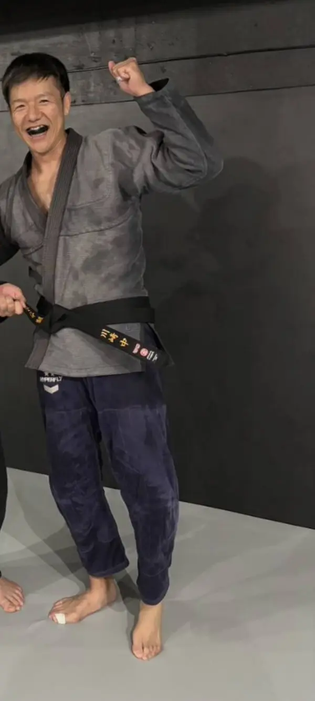
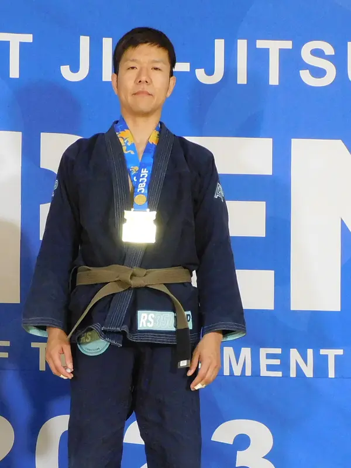
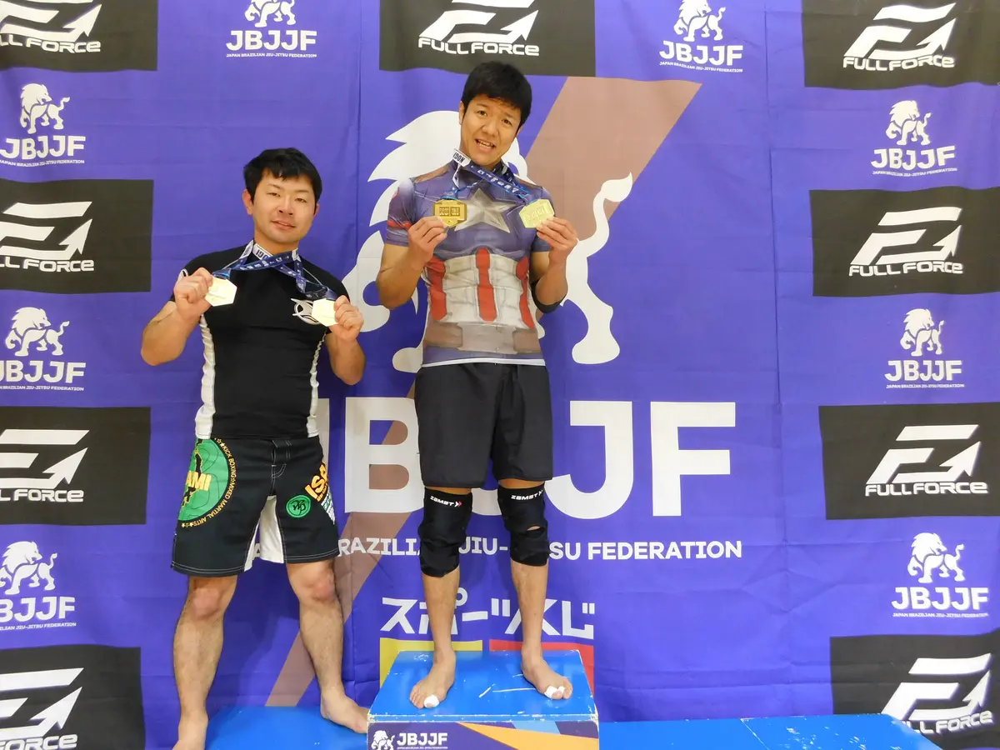

最先端より、続けられる柔術。
代表の私は、学生時代に少し柔道をかじった程度で、格闘技に本格的に打ち込み始めたのは30歳を過ぎてからです。20代でバリバリやってきたわけでも、最新の技術にくわしいわけでもありません。それでもコツコツ続けていたら、黒帯をいただき、初心者に教える側にもなれました。だからこの道場は、ちいさく始めて、長く続けることを大切にします。
少人数だから、名前と顔がすぐに覚えられます。一人ひとりの体力やペースに合わせて教えられます。
「今日はエビができた」「青帯になってみたい」。大会の結果ではなく、自分の小さな成長を目標にします。
ケガをしない強度、通いやすいコンパクトな道場、続けやすい料金。体にもお財布にも、無理をさせません。
この道場がやること
- 基本の動きを、順番に分けてていねいに教える
- スパーリングは相手に合わせた強さで
- 年齢・体力・経験に合わせて練習内容を調整する
- 道場の外でも気持ちよく付き合える仲間づくり
この道場がやらないこと
- 試合に向けた追い込み練習
- 根性論や「見て覚えろ」式の指導
- 先輩・後輩の上下関係
- 飲み会や大会出場の強制
こんな人を待っています
大人の男性だけの、落ち着いた道場です。自分のペースで、自分の意思で続けたい人を歓迎します。
- 30代・40代から、何か新しい運動を始めたい
- 格闘技は未経験。運動にもあまり自信がない
- 白帯から、いつか青帯になってみたい
- 試合には出なくていい。練習そのものを楽しみたい
- 他のジムは、ちょっと雰囲気が激しすぎた
- 仕事以外の、ゆるいつながりがほしい
まずは「白帯から青帯へ」
柔術には帯の色で段階があり、白帯の黒い部分に巻く白いテープ（ストライプ）が、少しずつ増えていきます。ミニマム柔術クラブでは、まず青帯をひとつのゴールにします。
※ 昇帯にかかる期間は、練習の頻度や年齢、体力によって大きく変わります。ここでは期間の約束はしません。焦らず、ケガなく続けることを優先します。
クラスの内容
道衣を着る「柔術」と、Tシャツ・短パンで行う「グラップリング（ノーギ）」の両方を予定しています。
はじめてクラス
受け身、エビ（床で体をずらす基本動作）、抑え込みからの逃げ方など、ケガをしないための基本だけを練習します。
柔術クラス
道衣の襟や袖をつかって戦う柔術。ガード（下からの攻防）やパス（ガードを越える動き）を順番に学びます。
グラップリングクラス
道衣を着ずに行う組み技。手ぶらで始めやすく、体の使い方がシンプルにわかります。
1回の練習の流れ（60分の例）
安心して続けるための約束
スパーリングは自由参加
見学だけ、ドリルだけの日があっても大丈夫です。慣れるまでは、指導者や経験者と組みます。
「まいった」はすぐに
苦しい・痛いと思ったら、相手をたたいて合図（タップ）します。タップされたらすぐ離す。これが一番大事なルールです。
危険な技は段階的に
初心者のうちは、ヒザをひねる足関節技など、ケガにつながりやすい技は扱いません。
体調・持病は遠慮なく
腰痛やひざの不安、ブランクなどは、最初に教えてください。できる範囲に合わせた練習を一緒に考えます。

代表あいさつ
川崎ミニマム柔術クラブ 代表
まだまだ修行の身です。でも、30代から始めても、コツコツ続ければちゃんと強くなれる。それを一緒に体験してもらえたらうれしいです。
- ブラジリアン柔術 黒帯 ／ 柔道 黒帯
- クロスポイント パラエストラ拝島にて柔術・グラップリングのインストラクターを担当
- JBJJF（日本ブラジリアン柔術連盟）主催大会で入賞経験あり
- 本業は公認心理師。相手の得意・苦手を見て、伝え方を変えることが仕事です
教え方：感覚ではなく、順番で伝える
- 全体を見せるこの技の目的は何か
- 分けて教える動きを2〜3つに分解
- くり返すつまずく所を先に伝える
- 試してみる軽いスパーで使って直す
練習のあとは、みんな笑顔
強い人も、はじめたばかりの人も、練習が終われば同じ仲間です。代表がこれまで一緒に汗を流してきた道場のように、ミニマム柔術クラブも、帰り道に「楽しかったな」と思える場所にします。


試合に出てみたい人は、もちろん応援します。
出ない人も、出る人も、同じマットで。勝ち負けより、続けられることを大事にします。
料金案・未確定
大人だけの小さな道場なので、そのぶん料金はおさえめにする予定です。通う回数に合わせて選べるようにし、正式な金額は場所が決まり次第お知らせします。
| プラン | 月額（税込） | こんな人に |
|---|---|---|
| 無料体験 | 0 円 | まずは雰囲気を見てみたい人。道衣は無料で貸し出します |
| ミニマム（月4回） | 7,700 円 | 週1回のペースで、ゆっくり続けたい人 |
| レギュラー（通い放題） | 11,000 円 | 週2回以上で、青帯を目指したい人 |
| ビジター（1回） | 2,200 円 | 他の道場の方、出張や旅行のついでに |
入会金・年会費・スポーツ保険の扱いも検討中です。
はじめるまでの流れ
体験を申し込む
下のフォームから、希望日と経験の有無を送ってください。こちらから日時をご連絡します。
体験クラスに参加
はじめてクラスで、受け身やエビなど基本の動きを体験。見学だけでもかまいません。
入会は、気に入ったら
その場で決めなくて大丈夫です。しつこい勧誘はしません。
持ち物：動きやすい服（Tシャツ・短パンなど）、飲み物、タオル。道衣は無料で貸し出します。爪は短く切ってきてください。
よくある質問
運動がまったくの未経験でも大丈夫ですか？
大丈夫です。代表自身も、本格的に始めたのは30歳を過ぎてからでした。最初は準備運動と基本動作だけでも十分です。
40代・50代からでも始められますか？
始められます。柔術は殴る・蹴るがなく、体の大きさや力よりも、体の使い方が大事な競技です。強度はその人に合わせて調整します。
試合に出ないといけませんか？
出なくてかまいません。この道場は試合のための道場ではありません。出てみたい人がいれば、もちろん応援します。
ケガが心配です。
スパーリングは自由参加で、危険度の高い技は段階的に扱います。不安な部位がある方は、最初に教えてください。
参加できるのはどんな人ですか？
18歳以上の男性が対象です。女性の方、18歳未満の方はご参加いただけませんので、ご了承ください。
体が小さくても大丈夫ですか？
大丈夫です。組む相手の体格や強さには配慮し、無理な組み合わせはしません。
柔術とグラップリングは何が違いますか？
柔術は道衣（柔道着に似た服）を着て、襟や袖をつかむことができます。グラップリングは道衣を着ずに、Tシャツや短パンで行う組み技です。
まずは一度、
マットに上がってみませんか。
オープン前の今は、体験のご希望を先にお預かりしています。場所と日程が決まったら、こちらからご連絡します。
※ このフォームは見本です。公開時は Googleフォーム・LINE公式アカウント・予約システムなどにつなぎます。